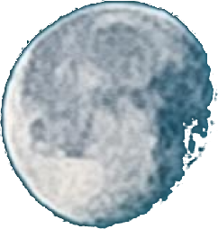

Animacje & klimat
Intro video, efekt głębi tła, gwiazdy podążające za kursorem i płynne reveal sekcji w scrollu.
 Mateusz App
Mateusz App


Project Showcase / Portfolio
Interaktywna strona demonstracyjna, która łączy animowany interfejs z praktycznym workflow zbierania danych i eksportu do .xlsx. To projekt portfolio nastawiony na pokaz umiejętności frontend + UX.
Intro video, efekt głębi tła, gwiazdy podążające za kursorem i płynne reveal sekcji w scrollu.
Dynamiczne generowanie arkusza Excel przez SheetJS z automatycznym dopasowaniem kolumn.
Edycja nazw, dodawanie i usuwanie opcji wyboru bez przeładowania strony i bez utraty danych.
Dopasowany layout mobile/desktop oraz fallbacki dla przeglądarek i preferencji reduced-motion.
Przetestuj dodawanie wpisów, edycję opcji i eksport do Excela bez opuszczania strony (po dodaniu 2 wpisów wyswietli sie przycisk "pobierz plik").
Ten projekt reprezentuje podejście project-first: nacisk na użyteczność, wydajność i czytelność kodu. Strona jest jednym z projektów portfolio i stanowi praktyczny przykład pracy z animacją, logiką formularzy i eksportem danych.